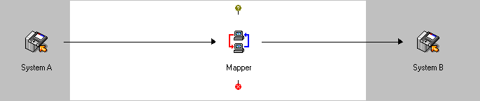
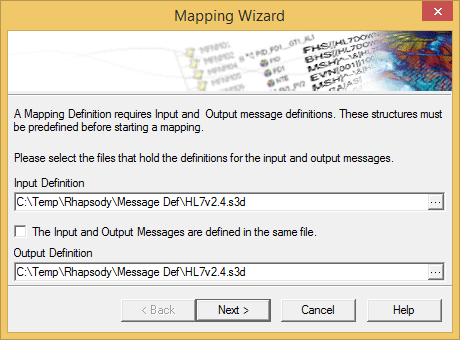
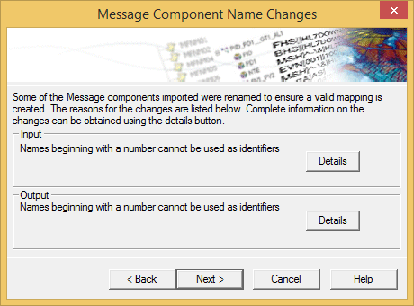
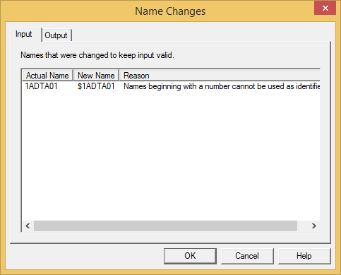
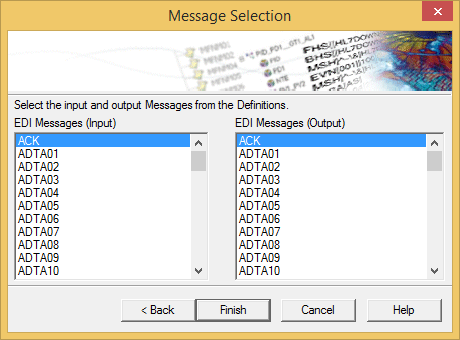
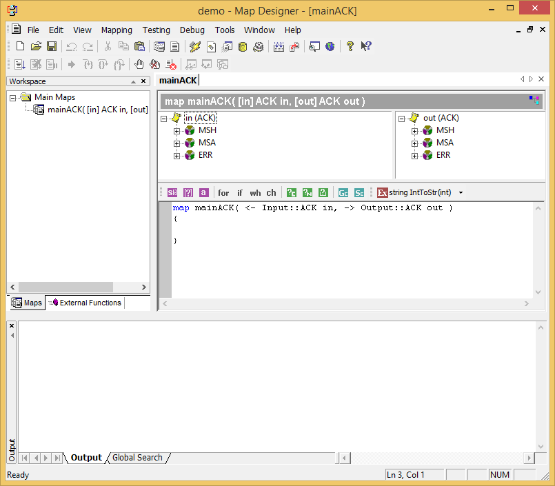
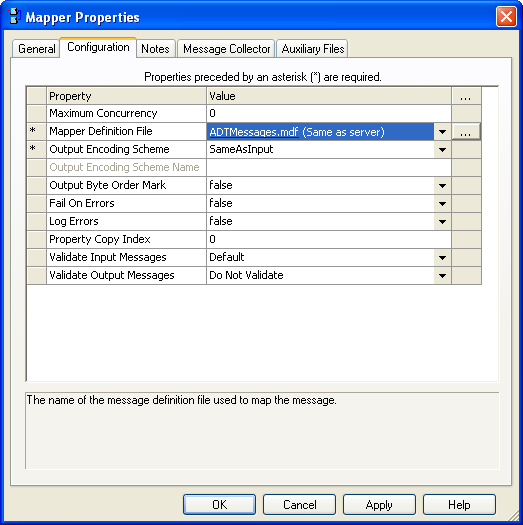

This scenario involves creating a custom mapper definition to convert two similar EDI messages, then using it in the Mapper filter.
The following screenshot illustrates a simple route:

To use the Mapper filter, you must define a Mapping Definition, which specifies how the fields from the input message should be mapped to the output message. The Map Designer is used to build the Mapping Definition.
To launch the Map Designer, select Tools>Map Designer. The Map Designer is then started, and the New Project wizard is displayed.
 Creating a Mapping Definition
Creating a Mapping Definition
- On the New tab of the New Project screen, enter the following details and then select the Create button.
- Enter a name for the mapping definition.
- Enter the location where you want to save the mapping definition.
The Mapping Wizard dialog is displayed:

- A mapping definition requires Input and Output message definitions:
- The Input Definition is the file that holds the object definition that is to be the source of the mapping; that is, the object to be mapped from.
The Output Definition is the file that holds the object definition that is to be created; that is, the object to be mapped to.
- Select the input and output definition files and click the Next button. The mapper importer then loads the selected files and checks to see if any object names need to be changed; for example, if one or more names conflict with Mapper Language keywords, or if a message name begins with a number. If a message name begins with a number, the dollar sign (
$) character is added to the beginning of the name to make it legal.
If modifications are made, the Message Components Name Changes dialog is displayed identifying each change:

Select the Details button to display further information relating to the object names that were changed, and why the change was made:

Alternatively, select the Next button to continue creating the mapping definition.
The Message Selection dialog is displayed:

The Message Selection dialog lists all root messages in the specified message definitions.
Select the input and output message structure to be mapped, and select the Finish button. The Mapper then creates an empty mapping definition between the two files:

The new mapping is automatically named Main<MSG>, where MSG is the type of the message/document as listed in this dialog, for example MainACK. This name cannot be changed. The two root messages selected are used as parameters to the new main map. The parameters are named in and out by default and can be changed by right clicking the map in the workspace and, from its shortcut menu, selecting Properties.
To configure the Mapper filter for this scenario.
- Click the Browse (...) button next to the Mapper Definition File property.
- Select the MDF definition file that was defined using Map Designer. The remaining options can be left at their default values for this example. The completed configuration is shown in the following screenshot:

Once all the routes and communication points are checked in and started, any input HL7 v2.4 ADT messages will be converted to HL7 v2.5 ADT at the output system.